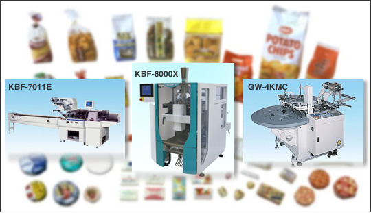
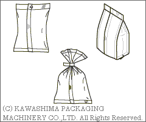
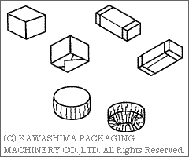
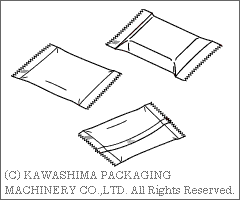

|  |
| PACKAGING STYLE(V.F.F.S MACHINE) | WRAPPING STYLE | ||
|  |  | ||
| PACKAGING STYLE(H.F.F.S MACHINE) | |||
|  |
| KBF-7000V New model will be exhibited in Japan Pack
2011. | |
| Exhibition JAPAN PACK 2011 (Japan International Packaging Machinery Show) Oct. 18 (Tue) - Oct. 21 (Fri) Tokyo Big Sight | |
| FOOMA JAPAN 2011 (International Food Machinery and Technology Exhibition) Jun. 7 (Tue) - Jun.10 (Fri) Tokyo Big Sight | |
| MOBAC SHOW 2011 (Machinery Materials Marketing of Bakery and Confectionery Show) Feb. 16 (Wed) - Feb. 19 (Sat) | |
| Agent
Wanted.
|